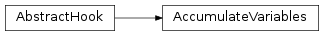
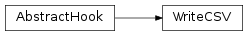
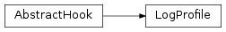
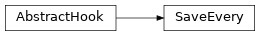
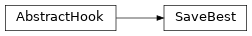
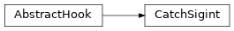

cxflow.hooks¶
cxflow hooks
Classes¶
AbstractHook: Cxflow hooks interface.AccumulateVariables: This hook accumulates the specified variables allowing their aggregation after each epoch.WriteCSV: Log the training results to CSV file.StopAfter: Stop the training after the specified number of epochs.LogVariables: Log the training results to stderr via standard logging module.LogProfile: Summarize and log epoch profile.SaveEvery: Save the model everynepochs.SaveBest: Save the model when it outperforms itself.CatchSigint: SIGINT catcher.ComputeStats: Accumulate the specified variables, compute the specified aggregation values and save them to the epoch data.Check: Terminate training if the given stream variable exceeds the threshold in at most specified number of epochs.
-
class
cxflow.hooks.AbstractHook(**kwargs)[source]¶ Bases:
objectCxflow hooks interface.
Hook lifecycle (event -> method invocation):
- cxflow constructs the hooks ->
__init__ - cxflow enters the main loop ->
before_training - cxflow starts an epoch
- cxflow computes a batch ->
after_batch - cxflow finishes the epoch ->
after_epochandafter_epoch_profile
- cxflow enters the main loop ->
- cxflow terminates the main loop ->
after_training
Naming conventions:
- hook names should describe hook actions with verb stems. E.g.:
LogProfileorSaveBestModel - hook names should not include
Hooksuffix
-
CXF_HOOK_INIT_ARGS= {'output_dir', 'dataset', 'model'}¶ Arguments which cxflow pass, in addition to the config args, to init methods of every hook being created.
-
__init__(**kwargs)[source]¶ Check for unrecognized arguments and warn about them.
Parameters: kwargs – kwargs not recognized in the child hook
-
__weakref__¶ list of weak references to the object (if defined)
-
after_batch(stream_name, batch_data)[source]¶ After batch event.
This event is triggered after every processed batch regardless of stream type. Batch results are available in results argument.
Parameters: Return type: None
-
after_epoch(epoch_id, epoch_data)[source]¶ After epoch event.
This event is triggered after every epoch wherein all the streams were iterated and their results are available in aggregated (averaged) form. For any other aggregation method, one must manually handle after_batch events.
Parameters: Return type: None
-
after_epoch_profile(epoch_id, profile, extra_streams)[source]¶ After epoch profile event.
This event provides opportunity to process time profile of the finished epoch.
Note: time of processing this event is not included in the profiled
This is called multiple times.
Parameters: Return type: None
- cxflow constructs the hooks ->
-
class
cxflow.hooks.AccumulateVariables(variables, **kwargs)[source]¶ Bases:
cxflow.hooks.abstract_hook.AbstractHookThis hook accumulates the specified variables allowing their aggregation after each epoch.
The hook itself does not utilize the accumulated variables. It is meant to be inherited from. The child hook will have the accumulated variables available in
self._accumulatorafter each epoch.The data are accumulated in a form of nested mapping ‘stream_name’ -> ‘variable_name’ -> [iterable values].
This hook should not be used directly as it does nothing on its own.
-
__init__(variables, **kwargs)[source]¶ Parameters: variables ( Iterable[str]) – collection of variable names to be logged
-
-
class
cxflow.hooks.WriteCSV(output_dir, output_file='training.csv', delimiter=', ', default_value='', variables=None, on_unknown_type='default', on_missing_variable='error', **kwargs)[source]¶ Bases:
cxflow.hooks.abstract_hook.AbstractHookLog the training results to CSV file.
Log all the variables¶hooks: - WriteCSV
Log only certain variables¶hooks: - WriteCSV: variables: [loss, fscore]
Warn about unsupported variables¶hooks: - WriteCSV: variables: [loss, fscore, xxx] on_unknown_type: warn
-
MISSING_VARIABLE_ACTIONS= {'default', 'error', 'warn'}¶ Action executed on missing variable.
-
UNKNOWN_TYPE_ACTIONS= {'default', 'error', 'warn'}¶ Action executed on unknown type detection.
-
__init__(output_dir, output_file='training.csv', delimiter=', ', default_value='', variables=None, on_unknown_type='default', on_missing_variable='error', **kwargs)[source]¶ Parameters: - output_dir (
str) – directory where the output shall be saved - output_file (
str) – name of the output file - delimiter (
str) – CSV delimiter - default_value (
str) – in case the value is not contained by the epoch data, this value will be used - variables (
Optional[Iterable[str]]) – a sequence of variable names to be logged. If not specified log all the available variables. - on_unknown_type (
str) – an action to be taken if the variable value type is not supported (e.g. a list) - on_missing_variable (
str) – an action to be taken if the variable is required but not provided
- output_dir (
-
_write_header(epoch_data)[source]¶ Write CSV header row with column names.
Column names are inferred from the epoch data and self.variables (if specified). Variables and streams expected later on are stored in self._variables and self._streams respectively.
Parameters: epoch_data ( Mapping[str,Mapping[str,Iterable[Any]]]) – epoch data to be logged
-
-
class
cxflow.hooks.StopAfter(epochs, **kwargs)[source]¶ Bases:
cxflow.hooks.abstract_hook.AbstractHookStop the training after the specified number of epochs.
stop the training after 500 epochs¶hooks: - StopAfter: epochs: 500

-
class
cxflow.hooks.LogVariables(variables=None, on_unknown_type='ignore', **kwargs)[source]¶ Bases:
cxflow.hooks.abstract_hook.AbstractHookLog the training results to stderr via standard logging module.
log all the variables¶hooks: - LogVariables
log only certain variables¶hooks: - LogVariables: variables: [loss]
warn about unsupported variables¶hooks: - LogVariables: on_unknown_type: warn

-
__init__(variables=None, on_unknown_type='ignore', **kwargs)[source]¶ Parameters: - variables (
Optional[Iterable[str]]) – a sequence of variable names to be logged. If not specified log all the available variables. - on_unknown_type – an action to be taken if the variable value type is not supported (e.g. a list)
- variables (
-
_log_variables(epoch_data)[source]¶ Log the specified variables from the epoch data.
At the moment, only scalars and dicts of scalars are properly formatted and logged. Other value types are ignored by default. One may set on_unknown_type to str in order to log the variable anyways.
Parameters: epoch_data ( Mapping[str,Mapping[str,Iterable[Any]]]) – epoch data to be logged- Raises:
- KeyError: if the specified variable is not found in the stream TypeError: if the variable value is of unsupported type and on_unknown_type is set to error
-
-
class
cxflow.hooks.LogProfile(**kwargs)[source]¶ Bases:
cxflow.hooks.abstract_hook.AbstractHookSummarize and log epoch profile.
log all variables¶hooks: - LogVariables
-
after_epoch_profile(epoch_id, profile, extra_streams)[source]¶ Summarize and log the given epoch profile.
- The profile is expected to contain at least:
read_data_train,eval_batch_trainandafter_batch_hooks_trainentries produced by the train streamafter_epoch_hooksentry
Parameters: Return type: None
-
-
class
cxflow.hooks.SaveEvery(model, n_epochs=1, on_failure='error', **kwargs)[source]¶ Bases:
cxflow.hooks.abstract_hook.AbstractHookSave the model every
nepochs.save every 10th epoch¶hooks: - SaveEvery: n_epochs: 10
save every epoch and only warn on failure¶hooks: - SaveEvery: on_failure: warn
-
SAVE_FAILURE_ACTIONS= {'ignore', 'error', 'warn'}¶ Action to be executed when model save fails.
-
after_epoch(epoch_id, **_)[source]¶ Save the model if epoch_id is divisible by self._save_every_n_epochs.
Parameters: epoch_id ( int) – number of the processed epochReturn type: None
-
-
class
cxflow.hooks.SaveBest(model, variable='loss', condition='min', stream='valid', aggregation='mean', output_name='best', on_save_failure='error', **kwargs)[source]¶ Bases:
cxflow.hooks.abstract_hook.AbstractHookSave the model when it outperforms itself.
save model with minimal valid loss¶hooks: - BestSaverHook
save model with minimal valid loss¶hooks: - SaveBest: variable: accuracy condition: max
-
CONDITIONS= {'max', 'min'}¶ Monitored variable objective goal.
-
__init__(model, variable='loss', condition='min', stream='valid', aggregation='mean', output_name='best', on_save_failure='error', **kwargs)[source]¶ Example: metric=loss, condition=min -> saved the model when the loss is best so far (on stream). :type model:
AbstractModel:param model: trained model :type variable:str:param variable: variable to be monitored :type condition:str:param condition: {min, max} :type stream:str:param stream: stream to be monitored :type aggregation:str:param aggregation: which aggregation to used (mean by default) :type output_name:str:param output_name: suffix of the saved model :type on_save_failure:str:param on_save_failure: action to be taken when model fails to save itself, one of {‘error’, ‘warn’, ‘ignore’}
-
_get_value(epoch_data)[source]¶ Retrieve the value of the monitored variable from the given epoch data.
Parameters: epoch_data ( Mapping[str,Mapping[str,Iterable[Any]]]) – epoch data which determine whether the model will be saved or not- Raises:
- KeyError: if any of the specified stream, variable or aggregation is not present in the epoch data. TypeError: if the variable value is not a dict when aggregation is specified ValueError: if the variable value is not a scalar
Return type: float
-
-
class
cxflow.hooks.CatchSigint(**kwargs)[source]¶ Bases:
cxflow.hooks.abstract_hook.AbstractHookSIGINT catcher.
On first sigint finish the current batch and terminate training politely, i.e. trigger all
after_traininghooks. On second sigint quit immediately with exit code 1register SIGINT catching¶hooks: - CatchSigint
-
_sigint_handler(signum, _)[source]¶ On the first signal, increase the self_num_sigints counter. Quit on any subsequent signal.
Parameters: signum – SIGINT signal number Return type: None
-
-
class
cxflow.hooks.ComputeStats(variables, **kwargs)[source]¶ Bases:
cxflow.hooks.accumulate_variables.AccumulateVariablesAccumulate the specified variables, compute the specified aggregation values and save them to the epoch data.
accumulate the accuracy variable (either model output or stream source); compute and store its mean value¶hooks: - ComputeStats: variables: accuracy: [mean]

-
AGGREGATIONS= {'max', 'std', 'median', 'mean', 'min'}¶ Supported numpy-like aggregation methods.
-
__init__(variables, **kwargs)[source]¶ Create new stats hook.
- Raises:
- ValueError: if the specified aggregation function is not supported
-
static
_compute_aggregation(data)[source]¶ Compute the specified aggregation on the given data.
Parameters: - aggregation (
str) – on of {mean, std, min, max, median}. - data (
Iterable[+T_co]) – data to be aggregated
- Raises:
- Value Error if the specified aggregation is not supported
- aggregation (
-
-
class
cxflow.hooks.Check(variable, required_min_value, max_epoch, stream='valid', **kwargs)[source]¶ Bases:
cxflow.hooks.abstract_hook.AbstractHookTerminate training if the given stream variable exceeds the threshold in at most specified number of epochs.
Raise
ValueErroron error or when the threshold was not exceeded in given number of epochsexceed 95% accuracy on valid (default) stream within at most 10 epochs¶hooks: - Check: variable: accuracy required_min_value: 0.93 max_epoch: 10

Exceptions¶
TrainingTerminated: Exception that is raised when a hook terminates the training.